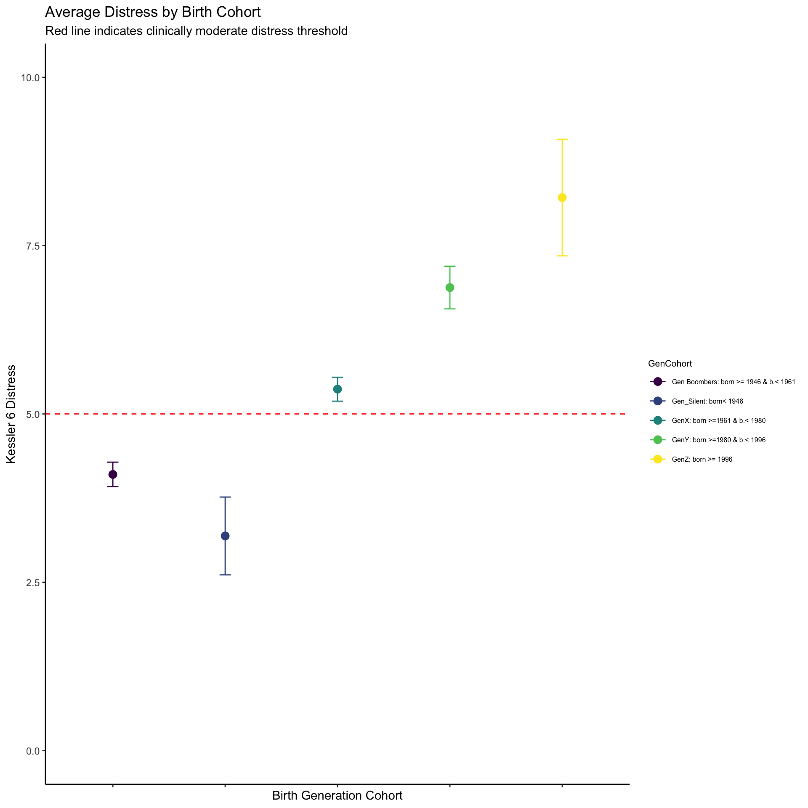
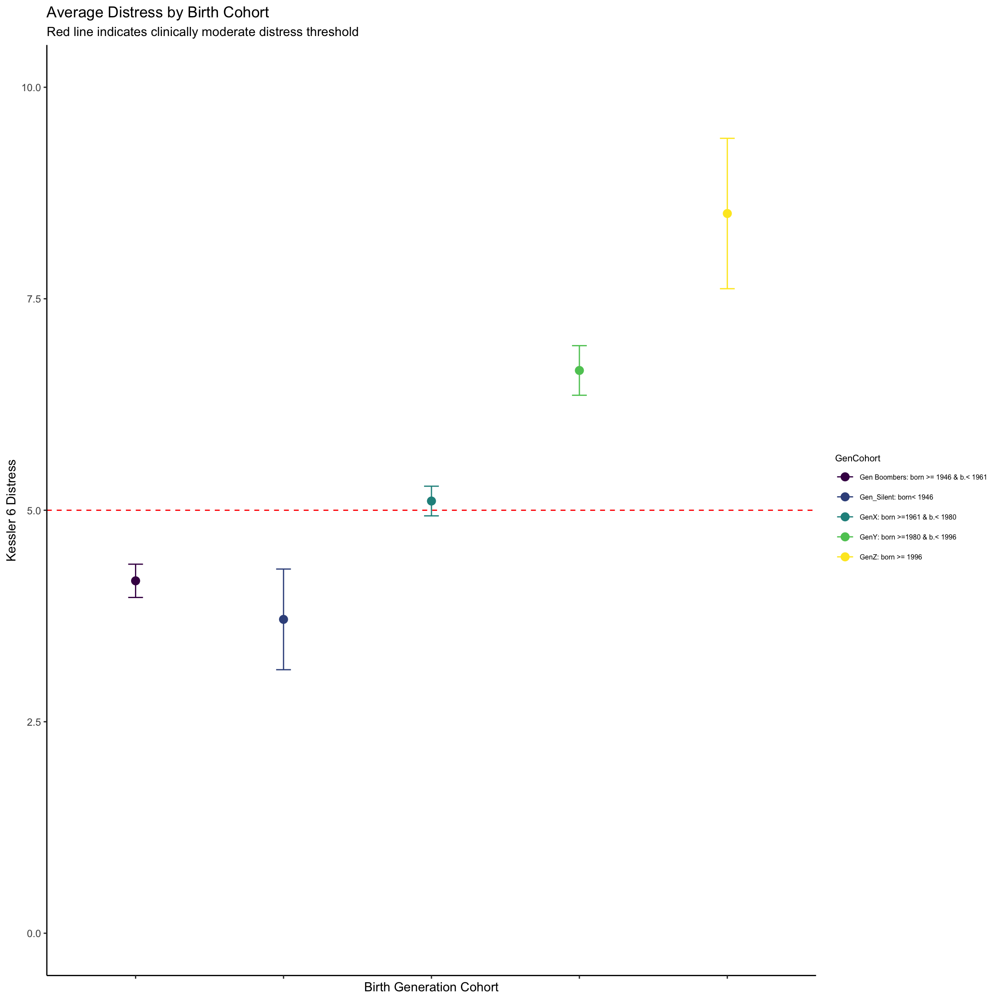
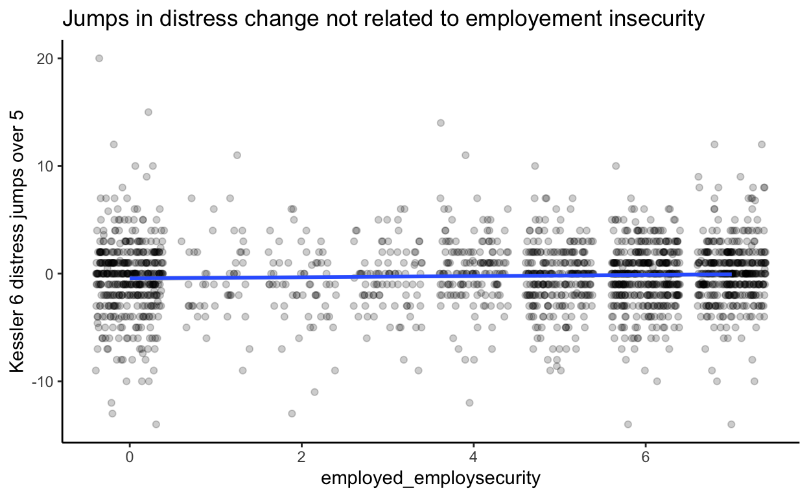
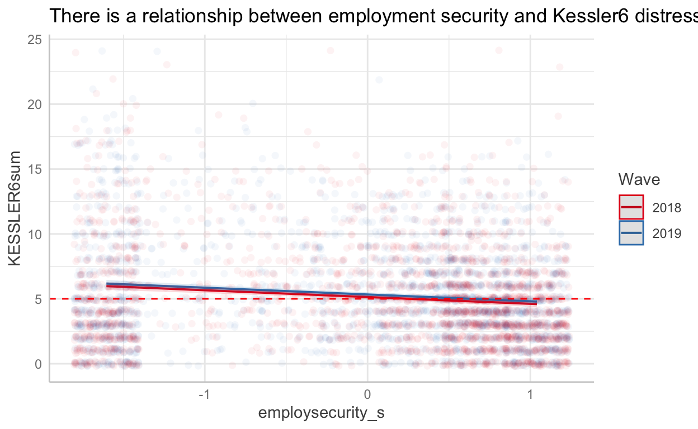
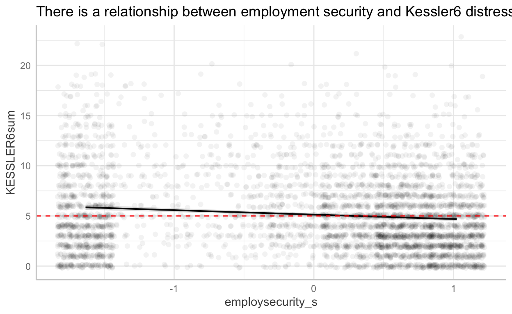
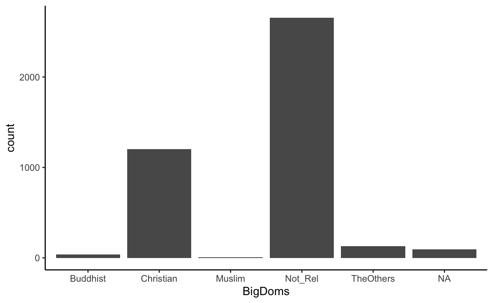
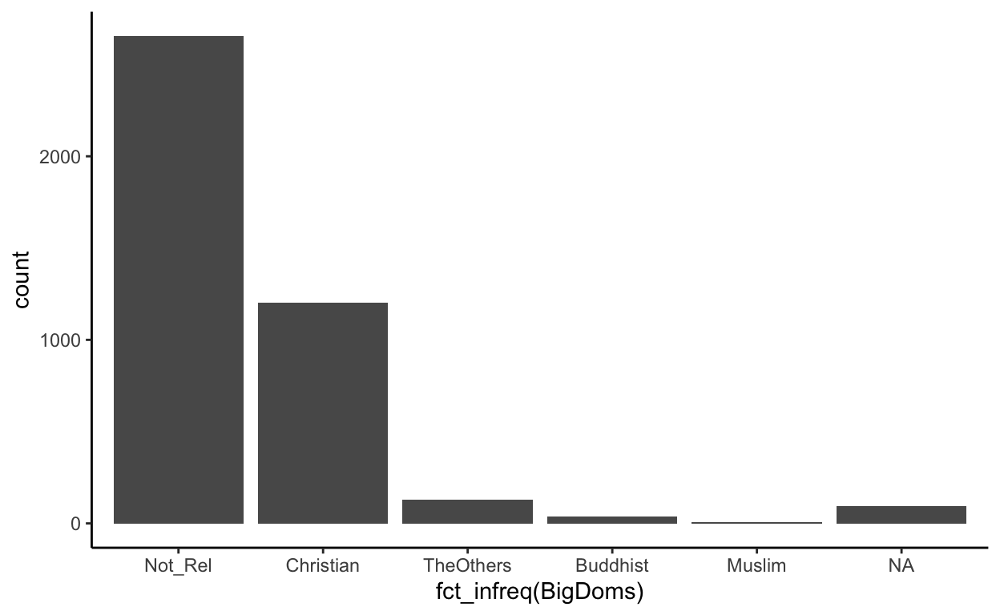
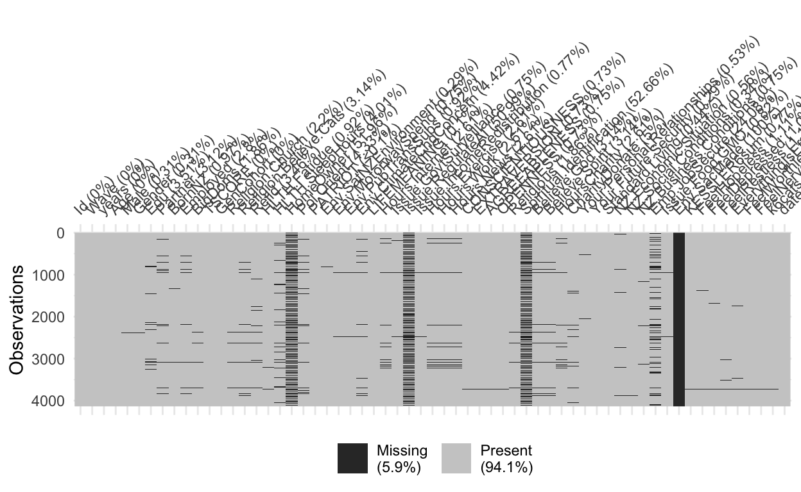
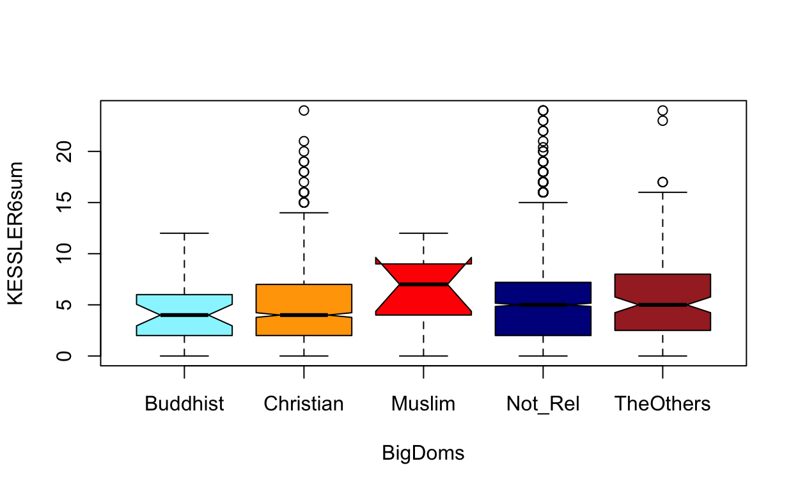

# Attaching packages (red = needs update)
insight 0.13.1.1 bayestestR 0.8.3.1
performance 0.7.0.1 parameters 0.12.0.1
see 0.6.2.1 effectsize 0.4.3.1
correlation 0.6.0.1 modelbased 0.5.9
report 0.2.0
Warnings or errors in CRAN checks for package(s) 'bayestestR', 'parameters', 'effectsize', 'correlation'.
Restart the R-Session and update packages in red with 'easystats::easystats_update()'.Preamble
One of the advantages of R is that allows us to create highly effective workflows. Today, well reinforce and extend the workflow skills that youve started to develop in previous weeks. Below well be working with the nz dataset, which is a reduced, truncated, and jittered version of the New Zealand Attitudes and Values Study. This dataset is for teaching only, if youd like to learn more about the study to which it belongs, go here or here.
Data carpentry continued
Different methods for selecting columns
Suppose we want to select all variables that start with Believe. We can do this in a number of ways.
First there is explicit selection:
# explicit selection
nz %>%
select("Believe.God", "Believe.Spirit")%>%
glimpse()
Rows: 4,136
Columns: 2
$ Believe.God <fct> Not Believe God, Not Believe God, Believe God
$ Believe.Spirit <fct> Not Believe Spirit, Not Believe Spirit, BelieWe can select all instances of a column that start with a certain name. For this you by using starts_with
nz %>%
select(starts_with("Believe"))%>%
glimpse()
Rows: 4,136
Columns: 2
$ Believe.God <fct> Not Believe God, Not Believe God, Believe God
$ Believe.Spirit <fct> Not Believe Spirit, Not Believe Spirit, BelieBy the same token, we can select all instances of a variable that ends with a certain string by using ends_with
nz %>%
select(ends_with("conditions"))%>%
glimpse()
Rows: 4,136
Columns: 2
$ NZ.Social.Conditions <dbl> 4, 6, 3, 0, 4, 3, 4, 5, 4, 6, 5, 5, 6
$ NZ.Business.Conditions <dbl> 8, 6, 4, 7, 5, 3, 4, 6, 6, 6, 5, 6, 5We can cast a broader net and select all instances of a variable within a string by using contains
nz %>%
select(contains("Believe"))%>%
glimpse()
Rows: 4,136
Columns: 3
$ Religion.Believe.Cats <dbl> 4, 4, 1, 1, 1, 1, 4, NA, 3, 3, 4, 4, 2
$ Believe.God <fct> Not Believe God, Not Believe God, Beli
$ Believe.Spirit <fct> Not Believe Spirit, Not Believe SpiritAs we can see, the net that we cast with contains was too broad. We dont want the Religion.Believe.Cats.
In R, you we programme your way out of this corner as follows:
nz %>%
select(contains("Believe") & - Religion.Believe.Cats)%>%
glimpse()
Rows: 4,136
Columns: 2
$ Believe.God <fct> Not Believe God, Not Believe God, Believe God
$ Believe.Spirit <fct> Not Believe Spirit, Not Believe Spirit, BelieThats inelegant; better to drop contains and revert to another methods.
Re-leveling a factor
Death, taxes, and factors are consequence of living. Lets look at the BigDoms variable in the nz, which is a factor identifying large religious denominations
.
Buddhist Christian Muslim Not_Rel TheOthers
37 1176 13 2697 136 Suppose we wanted to make Not Rel our base category for this factor. We could do so as follows:
## suppose we want "Not_Rel" as the base category, and rearrange the other levels
library(forcats) # this is part of the tidyverse package.
nz1<-nz %>%
dplyr::select(BigDoms, KESSLER6sum) %>%
dplyr::mutate(BigDoms =
forcats::fct_relevel(BigDoms, c("Not_Rel","Christian","Buddhist","Muslim","TheOthers")))
#inspect data
nz1%>%
group_by(BigDoms)%>%
count()
# A tibble: 6 x 2
# Groups: BigDoms [6]
BigDoms n
<fct> <int>
1 Not_Rel 2697
2 Christian 1176
3 Buddhist 37
4 Muslim 13
5 TheOthers 136
6 <NA> 77The reordering makes for a more sensible model because the base category is now Not_Rel or not-religious. Hence comparisons are to this category.
m0<- glm( KESSLER6sum ~ BigDoms, data = nz1 )
parameters::model_parameters(m0) %>%
print_html(caption = "Model of Distress by Denomination with the base category is `No Religion'")
| Model of Distress by Denomination with the base category is `No Religion' | |||||
|---|---|---|---|---|---|
| Parameter | Coefficient | SE | 95% CI | t(4026) | p |
| (Intercept) | 5.17 | 0.08 | (5.02, 5.32) | 67.55 | < .001 |
| BigDoms (Christian) | -0.25 | 0.14 | (-0.53, 0.02) | -1.82 | 0.069 |
| BigDoms (Buddhist) | -0.32 | 0.66 | (-1.60, 0.97) | -0.48 | 0.631 |
| BigDoms (Muslim) | -0.25 | 1.10 | (-2.41, 1.91) | -0.23 | 0.820 |
| BigDoms (TheOthers) | 0.82 | 0.35 | (0.13, 1.51) | 2.33 | 0.020 |
We can see the results better using a coefficient graph, which visualises the information presented in the table.
plot(parameters::model_parameters(m0) ) + labs(title = "Comparison of Religious groups to secular people",
subtitle = "Christians are a little more chilled out, \n Other denoms are less chilled out")
The base category is the comparison class. Should we infer causation? This is getting ahead of ourselvesbut the for now lets just leave it at probably not.
Creating categories
It is almost never a good idea to make continuous data into categorical data. However, occassionally you will need to stoop, for example to please a reviewer with a supplemental analysis. Here we break the KESSLER6 distress scores into categories that are used to diagnose moderate and severe psychological distress.
nz <-nz %>%
dplyr::mutate(k6cats = cut(
KESSLER6sum,
breaks = c(-Inf, 5, 13, Inf), # create Kessler 6 diagnostic categories
labels = c("Low Distress", "Moderate Distress", "Serious Distress"),
right = TRUE
))
table(nz$k6cats)
Low Distress Moderate Distress Serious Distress
2560 1372 172 Using ifelse to create factors
I find it is useful to keep explicit control over how I am making the categories. For example, in the previous example, I didnt remember whether cut includes a value to the left or to the right. I had to look this up. However, I can use ifelse to create the categories, and this is clear:
nz %>%
dplyr::mutate(k6cats1 = as.factor(ifelse(
KESSLER6sum <= 5,
"Low Distress",
ifelse(KESSLER6sum <= 13, "Moderate Distress", "Serious Distress")
))) %>%
group_by(k6cats1) %>%
count()
# A tibble: 4 x 2
# Groups: k6cats1 [4]
k6cats1 n
<fct> <int>
1 Low Distress 2560
2 Moderate Distress 1372
3 Serious Distress 172
4 <NA> 32#check this is the same as the previous method
nz %>%
group_by(k6cats) %>%
count()
# A tibble: 4 x 2
# Groups: k6cats [4]
k6cats n
<fct> <int>
1 Low Distress 2560
2 Moderate Distress 1372
3 Serious Distress 172
4 <NA> 32We can see that the method returns the same values as the cut method.
Scaling and centering indicators, and logs
Throughout this course well be standardising and centering indicators. It is time that you get used to the protocol for doing this.
Suppose we want to standardise the Relid indicator. This will transform the Relid indicator into standard deviation units. In later seminars, well explain why this transformation is useful. For now, this is how you do it:
nz1 <- nz %>%
select(Relid)%>%
mutate(religousid_s = scale(Relid, scale = TRUE, center = TRUE))
head(nz1)
# A tibble: 6 x 2
Relid religousid_s[,1]
<dbl> <dbl>
1 0 -0.624
2 0 -0.624
3 6 1.71
4 6 1.71
5 3 0.545
6 3 0.545What happened? The variable name for our standardised variable looks weird: religious_s[ ,1]
This isnt a worry. We use the variable as we would any other and all is fine. 1
| religousid_s | |||
|---|---|---|---|
| Predictors | Estimates | CI | p |
| (Intercept) | -0.00 | -0.030.03 | 1.000 |
| Observations | 3993 | ||
| R2 / R2 adjusted | 0.000 / 0.000 | ||
Important advice: Transform your data as the last step in your piping workflow.
This is because if you filter cases, youll end up with a variable that isnt in standard deviations units
nza <- nz %>%
select(Relid, BigDoms)%>%
mutate(religousid_s = scale(Relid, scale = TRUE, center = TRUE))
nzb <- nz %>%
select(Relid, BigDoms)%>%
mutate(religousid_s = scale(Relid, scale = TRUE, center = TRUE)) %>%
filter(BigDoms !="Not_Rel")
# compare
summary(nza$religousid_s)
V1
Min. :-0.6237
1st Qu.:-0.6237
Median :-0.6237
Mean : 0.0000
3rd Qu.: 0.5453
Max. : 2.1040
NA's :143 # with
summary(nzb$religousid_s)
V1
Min. :-0.234
1st Qu.: 0.935
Median : 1.325
Mean : 1.298
3rd Qu.: 2.104
Max. : 2.104
NA's :66 When we filter last, the mean value in the dataset is 1.3 everything has changed, and the intercept now means something different.
nz1 <- nz1 %>%
select(Relid)%>%
mutate(religousid_s = scale(Relid, scale = TRUE, center = TRUE))
head(nz1)
# A tibble: 6 x 2
Relid religousid_s[,1]
<dbl> <dbl>
1 0 -0.624
2 0 -0.624
3 6 1.71
4 6 1.71
5 3 0.545
6 3 0.545or simply:
To center a variable we set scale = FALSE, center = TRUE
nz1 <- nz %>%
mutate(religousid_c = scale(Relid, scale = FALSE, center = TRUE))
# inspect new indicator
nz1%>%
select(Relid,religousid_c)%>%
glimpse()
Rows: 4,136
Columns: 2
$ Relid <dbl> 0, 0, 6, 6, 3, 3, NA, NA, 0, 0, 0, 0, 1, 1, 3,
$ religousid_c <dbl[,1]> <matrix[23 x 1]>For extreme values we typically will take a log transformation. We can create a new indicator by combining mutate and log as follows:
nz1 <- nz %>%
mutate(charitydonate_log = log(CharityDonate + 1))
# inspect new indicator
nz1 %>%
select(CharityDonate,charitydonate_log)%>%
glimpse()
Rows: 4,136
Columns: 2
$ CharityDonate <dbl> 1000, 0, 500, 500, 50, 20, 20, 100, 400, 3
$ charitydonate_log <dbl> 6.908755, 0.000000, 6.216606, 6.216606, 3.Create and work with dates a date
nz <- nz %>%
dplyr::mutate(date = make_date(year = 2009, month = 6, day = 30) + TSCORE) # first data of data collection in this study
We can analyze dates, for example, for how many minutes were data collected?
nz %>%
select(date)%>%
summary()
date
Min. :2018-01-24
1st Qu.:2018-08-08
Median :2019-10-03
Mean :2019-05-15
3rd Qu.:2019-12-05
Max. :2020-10-10 int<-lubridate::interval(ymd("2018-01-02"), ymd("2020-10-06"))
#time in years
time_length(int, "year")
[1] 2.759563#time in minutes
time_length(int, "minutes")
[1] 1451520Create a timeline
Here were going to graph the number of responses each day for the years of data collection.
library(lubridate)
library(ggplot2)
datrep <- nz %>%
count(day = floor_date(date, "day")) %>%
dplyr::mutate(Year = factor(ifelse(
day < "2010-01-01",
2009,
ifelse(
day < "2011-01-01",
2010,
ifelse(
day < "2012-01-01",
2011,
ifelse(
day < "2013-01-01",
2012,
ifelse(
day < "2014-01-01",
2013,
ifelse(
day < "2015-01-01",
2014,
ifelse(
day < "2016-01-01",
2015,
ifelse(
day < "2017-01-01",
2016,
ifelse(
day < "2018-01-01",
2017,
ifelse(day < "2019-01-01", 2018,
ifelse(day < "2020-01-01", 2019, 2020))
)
)
)
)
)
)
)
)
))) %>%
arrange(day)
# create the graph
ggplot(datrep, aes(day, n)) +
geom_col(aes(fill = Year)) +
scale_x_date(date_labels = "%b/%Y") +
xlab("Days") + ylab("Count of Responses") +
ggtitle("Our Dataset's Daily Counts") +
theme_classic() +
scale_fill_viridis_d()

Note that we can use the datrep dataframe that we created to explore aspects of data collection. For example we can arrange the dataset by day in descending order of participants sampled:
datrep%>%
arrange(desc(n))
# A tibble: 623 x 3
day n Year
<date> <int> <fct>
1 2018-06-21 121 2018
2 2018-06-22 104 2018
3 2018-06-20 88 2018
4 2018-06-24 80 2018
5 2019-12-03 67 2019
6 2018-06-23 65 2018
7 2018-06-25 62 2018
8 2019-12-05 46 2019
9 2018-10-20 45 2018
10 2018-06-26 44 2018
# with 613 more rowsWe can ask: were there any inherently stressful days?
To see this, we can take average stress levels by day, and then see where the high average stress days fall.
tn<-nz %>%
select(date,KESSLER6sum,Id) %>%
group_by(date)%>%
summarise(
av_distress = mean(KESSLER6sum, na.rm = TRUE),
n = n_distinct(Id)
) %>%
arrange(desc(av_distress))
tn
# A tibble: 623 x 3
date av_distress n
<date> <dbl> <int>
1 2020-05-10 19 1
2 2020-05-23 19 1
3 2020-04-22 17 1
4 2020-04-26 15 1
5 2020-05-31 15 1
6 2020-01-18 14 1
7 2020-03-05 14 1
8 2020-08-26 14 1
9 2020-01-22 13.5 2
10 2019-10-26 13 3
# with 613 more rowsGraphing the densities reveals the following
tn%>%
ggplot(., aes(date, av_distress)) +
geom_col(aes(fill =(n))) + scale_x_date(date_labels = "%b/%Y") + theme_classic() + scale_fill_viridis_c()

Clearly the stressful days are an artifact of days with low numbers of participant respondents.
Lets see whether there are any stressful days of the week. We do this by creating a weekday variable using the wday function in the lubridate package. Lets graph our results using a pipe %>% workflow:
nz %>%
select(Id, date, KESSLER6sum) %>%
mutate(weekdays = wday(date, label = TRUE)) %>%
group_by(weekdays) %>%
summarise(
mn_k6 = mean(KESSLER6sum, na.rm = TRUE),
sd_k6 = sd(KESSLER6sum, na.rm = TRUE),
n_k6w = n()
) %>%
mutate(
se_k6 = sd_k6 / sqrt(n_k6w),
lw_ci = mn_k6 - qt(1 - (0.05 / 2), n_k6w - 1) * se_k6,
up_ci = mn_k6 + qt(1 - (0.05 / 2), n_k6w - 1) * se_k6
) %>%
ggplot(., aes(x = weekdays, y = mn_k6, colour = mn_k6)) +
geom_errorbar(aes(ymin = lw_ci, ymax = up_ci), width = .1) +
geom_point(size = 3) +
scale_y_continuous(limits = c(0,7)) +
theme_classic() + scale_fill_viridis_d()

The bars of the graph overlap; despite the variability over the two years of data collection, we dont find differences in distress by days.
Ok Boomer, you ask, what if we were to calculate distress by generational cohorts?
My reply, Im not a boomer, so lets check it out:
nz %>%
select(GenCohort, KESSLER6sum) %>%
group_by(GenCohort) %>%
summarise(
mn_k6 = mean(KESSLER6sum, na.rm = TRUE),
sd_k6 = sd(KESSLER6sum, na.rm = TRUE),
n_k6w = n()
) %>%
mutate(
se_k6 = sd_k6 / sqrt(n_k6w),
lw_ci = mn_k6 - qt(1 - (0.05 / 2), n_k6w - 1) * se_k6,
up_ci = mn_k6 + qt(1 - (0.05 / 2), n_k6w - 1) * se_k6
) %>%
ggplot(., aes(x = GenCohort, y = mn_k6, colour = GenCohort)) +
geom_errorbar(aes(ymin = lw_ci, ymax = up_ci), width = .1) +
geom_point(size = 3) +
scale_y_continuous(limits = c(0, 7)) +
theme_classic() +
geom_hline(yintercept = 5,
colour = "red",
linetype = "dashed") +
scale_y_continuous(limits = c(0, 10)) +
theme(
legend.text = element_text(size = 6),
legend.title = element_text(size = 8),
axis.text.x = element_blank()
) +
xlab("Birth Generation Cohort") +
ylab("Kessler 6 Distress") +
labs(title = "Average Distress by Birth Cohort",
subtitle = "Red line indicates clinically moderate distress threshold") +
scale_colour_viridis_d()

Slice
Dplyrs slice function can be handy. Say we only want the first six rows
datrep%>%
arrange(desc(n)) %>%
slice(1:6)
# A tibble: 6 x 3
day n Year
<date> <int> <fct>
1 2018-06-21 121 2018
2 2018-06-22 104 2018
3 2018-06-20 88 2018
4 2018-06-24 80 2018
5 2019-12-03 67 2019
6 2018-06-23 65 2018 Say we only want the 1st row, the 3rd row, and the 20th row
# A tibble: 3 x 3
day n Year
<date> <int> <fct>
1 2018-06-21 121 2018
2 2018-06-20 88 2018
3 2019-12-12 36 2019 Lags and leads using timeseries data
Create a difference variable for change in Kessler 6
library("pmdplyr")
df <-nz %>%
dplyr::filter(!is.na(KESSLER6sum))%>%
mutate(wave = as.numeric(Wave))%>%
mutate(lag_k6 = tlag(KESSLER6sum,
.i = Id, # id variable
.t = wave # time series variable, needs to be numeric
))%>%
mutate(diff_k6 = lag_k6 - KESSLER6sum) %>%
select(Id,Wave,KESSLER6sum,diff_k6,Emp.JobSecure,Employed)%>%
arrange(desc(diff_k6))
We can very crudely explore whether employment security relates to distress change
df %>%
filter(Wave == 2019) %>%
mutate(employed_employsecurity = as.factor(ifelse(Employed ==1, Emp.JobSecure,0)))%>%
ggplot(data = ., aes(x = diff_k6, fill = employed_employsecurity) )+
geom_histogram() +
xlab("Difference in K6 eleveation (cases above 5)") +
ylab("Counts of cases") +
labs(subtitle ="No clear relationship between unemployment insecurity and distress change")+
scale_fill_discrete(name="Employment Security 1-7") +
scale_fill_viridis_d() + theme_classic() +
theme(legend.position = "bottom")

And remarkably we dont see much evidence in the cross-sectional analysis.
dfnew <- df %>%
filter(Wave == 2019) %>%
mutate(employed_employsecurity = as.numeric(ifelse(Employed == 1, Emp.JobSecure, 0)))%>%
filter(!is.na(employed_employsecurity))
head(dfnew)
# A tibble: 6 x 7
Id Wave KESSLER6sum diff_k6 Emp.JobSecure Employed
<dbl> <fct> <dbl> <dbl> <dbl> <dbl>
1 1713 2019 1 20 4 1
2 564 2019 4 13 NA 0
3 1001 2019 0 12 4 1
4 517 2019 4 11 NA 0
5 610 2019 14 9 7 1
6 922 2019 5 9 7 1
# with 1 more variable: employed_employsecurity <dbl># Graph
ggplot(dfnew, aes(y = diff_k6, employed_employsecurity)) +
geom_jitter(alpha = .2) +
geom_smooth(method = lm) +
xlab("employed_employsecurity") +
ylab("Kessler 6 distress jumps over 5") +
ggtitle("Jumps in distress change not related to employement insecurity") +
scale_fill_viridis_d() + theme_classic()

However this is misleading. We can formally model the relationship between employment security and Kessler6 distress
dfnew2 <- df %>%
mutate(employed_employsecurity = as.numeric(ifelse(Employed == 1, Emp.JobSecure, 0))) %>%
filter(!is.na(employed_employsecurity)) %>%
dplyr::mutate(employsecurity_s = scale(employed_employsecurity))
m00a<-lmer(KESSLER6sum ~ employsecurity_s + (1|Id), data = dfnew2)
plot(ggeffects::ggpredict(m00a, terms=c("employsecurity_s")),
add.data = TRUE, jitter = 0.2, dot.alpha =.05) + geom_hline(yintercept = 5,
colour = "red",
linetype = "dashed") +
labs(title = "There is a relationship between employment security and Kessler6 distress")

Well return to the question of the relationship between employment security and distress down the track. For now, I want to alert you to an important lesson:
Pro tip: do not read too much into your descriptive analysis
This is especially true when creating new variables. Just because you can make a variable doesnt mean you should use it, or interpret it!
Put differently, our workflow will require much more than descriptive statistics
Data summary
Summarise all your data
The skimr package
The skimmer package can be helpful in detecting problems. A drawback note that it is interpreting all factors as numbers).
For example, spiritual identification was not measured in 2019/2020.
| Name | Piped data |
| Number of rows | 4136 |
| Number of columns | 60 |
| _______________________ | |
| Column type frequency: | |
| factor | 13 |
| logical | 1 |
| numeric | 45 |
| ________________________ | |
| Group variables | Wave |
Variable type: factor
| skim_variable | Wave | n_missing | complete_rate | ordered | n_unique | top_counts |
|---|---|---|---|---|---|---|
| Male | 2018 | 6 | 1.00 | FALSE | 2 | Not: 1290, Mal: 772 |
| Male | 2019 | 7 | 1.00 | FALSE | 2 | Not: 1289, Mal: 772 |
| BigDoms | 2018 | 32 | 0.98 | FALSE | 5 | Not: 1322, Chr: 619, The: 70, Bud: 18 |
| BigDoms | 2019 | 45 | 0.98 | FALSE | 5 | Not: 1375, Chr: 557, The: 66, Bud: 19 |
| GenCohort | 2018 | 0 | 1.00 | FALSE | 5 | Gen: 886, Gen: 693, Gen: 387, Gen: 52 |
| GenCohort | 2019 | 0 | 1.00 | FALSE | 5 | Gen: 886, Gen: 693, Gen: 387, Gen: 52 |
| Religious | 2018 | 32 | 0.98 | FALSE | 2 | Not: 1322, Rel: 714 |
| Religious | 2019 | 45 | 0.98 | FALSE | 2 | Not: 1375, Rel: 648 |
| Believe.God | 2018 | 83 | 0.96 | FALSE | 2 | Not: 1091, Bel: 894 |
| Believe.God | 2019 | 47 | 0.98 | FALSE | 2 | Not: 1175, Bel: 846 |
| Believe.Spirit | 2018 | 83 | 0.96 | FALSE | 2 | Bel: 1319, Not: 666 |
| Believe.Spirit | 2019 | 47 | 0.98 | FALSE | 2 | Bel: 1307, Not: 714 |
| FeelHopeless | 2018 | 26 | 0.99 | FALSE | 5 | Non: 1046, A L: 600, Som: 338, Mos: 54 |
| FeelHopeless | 2019 | 20 | 0.99 | FALSE | 5 | Non: 977, A L: 639, Som: 349, Mos: 79 |
| FeelDepressed | 2018 | 20 | 0.99 | FALSE | 5 | Non: 1469, A L: 361, Som: 170, Mos: 43 |
| FeelDepressed | 2019 | 24 | 0.99 | FALSE | 5 | Non: 1434, A L: 377, Som: 193, Mos: 35 |
| FeelRestless | 2018 | 22 | 0.99 | FALSE | 5 | A L: 763, Som: 594, Non: 535, Mos: 138 |
| FeelRestless | 2019 | 25 | 0.99 | FALSE | 5 | A L: 757, Som: 608, Non: 517, Mos: 146 |
| EverythingIsEffort | 2018 | 23 | 0.99 | FALSE | 5 | A L: 795, Non: 551, Som: 501, Mos: 158 |
| EverythingIsEffort | 2019 | 27 | 0.99 | FALSE | 5 | A L: 804, Non: 544, Som: 502, Mos: 156 |
| FeelWorthless | 2018 | 19 | 0.99 | FALSE | 5 | Non: 1433, A L: 356, Som: 186, Mos: 67 |
| FeelWorthless | 2019 | 22 | 0.99 | FALSE | 5 | Non: 1407, A L: 375, Som: 195, Mos: 60 |
| FeelNervous | 2018 | 18 | 0.99 | FALSE | 5 | A L: 789, Non: 620, Som: 482, Mos: 146 |
| FeelNervous | 2019 | 25 | 0.99 | FALSE | 5 | A L: 850, Non: 568, Som: 468, Mos: 133 |
| k6cats | 2018 | 15 | 0.99 | FALSE | 3 | Low: 1296, Mod: 673, Ser: 84 |
| k6cats | 2019 | 17 | 0.99 | FALSE | 3 | Low: 1264, Mod: 699, Ser: 88 |
Variable type: logical
| skim_variable | Wave | n_missing | complete_rate | mean | count |
|---|---|---|---|---|---|
| Env.SacMade | 2018 | 2068 | 0 | NaN | : |
| Env.SacMade | 2019 | 2068 | 0 | NaN | : |
Variable type: numeric
| skim_variable | Wave | n_missing | complete_rate | mean | sd | p0 | p25 | p50 | p75 | p100 | hist |
|---|---|---|---|---|---|---|---|---|---|---|---|
| Id | 2018 | 0 | 1.00 | 1034.50 | 597.12 | 1.00 | 517.75 | 1034.50 | 1551.25 | 2068.00 | |
| Id | 2019 | 0 | 1.00 | 1034.50 | 597.12 | 1.00 | 517.75 | 1034.50 | 1551.25 | 2068.00 | |
| years | 2018 | 0 | 1.00 | 9.07 | 0.31 | 8.40 | 8.82 | 8.94 | 9.25 | 10.15 | |
| years | 2019 | 0 | 1.00 | 10.34 | 0.25 | 10.03 | 10.14 | 10.26 | 10.48 | 11.11 | |
| Age | 2018 | 0 | 1.00 | 50.07 | 13.49 | 18.00 | 41.00 | 52.00 | 60.00 | 90.00 | |
| Age | 2019 | 0 | 1.00 | 51.83 | 13.45 | 19.55 | 42.60 | 54.11 | 61.94 | 91.08 | |
| Gender | 2018 | 6 | 1.00 | 0.37 | 0.48 | 0.00 | 0.00 | 0.00 | 1.00 | 1.00 | |
| Gender | 2019 | 7 | 1.00 | 0.37 | 0.48 | 0.00 | 0.00 | 0.00 | 1.00 | 1.00 | |
| Edu | 2018 | 80 | 0.96 | 5.39 | 2.78 | 0.00 | 3.00 | 6.00 | 7.00 | 10.00 | |
| Edu | 2019 | 65 | 0.97 | 5.64 | 2.72 | 0.00 | 3.00 | 7.00 | 8.00 | 10.00 | |
| Partner | 2018 | 82 | 0.96 | 0.74 | 0.44 | 0.00 | 0.00 | 1.00 | 1.00 | 1.00 | |
| Partner | 2019 | 47 | 0.98 | 0.74 | 0.44 | 0.00 | 0.00 | 1.00 | 1.00 | 1.00 | |
| BornNZ | 2018 | 34 | 0.98 | 0.78 | 0.41 | 0.00 | 1.00 | 1.00 | 1.00 | 1.00 | |
| BornNZ | 2019 | 6 | 1.00 | 0.78 | 0.41 | 0.00 | 1.00 | 1.00 | 1.00 | 1.00 | |
| Employed | 2018 | 87 | 0.96 | 0.80 | 0.40 | 0.00 | 1.00 | 1.00 | 1.00 | 1.00 | |
| Employed | 2019 | 29 | 0.99 | 0.77 | 0.42 | 0.00 | 1.00 | 1.00 | 1.00 | 1.00 | |
| TSCORE | 2018 | 0 | 1.00 | 3375.01 | 114.98 | 3130.00 | 3282.00 | 3326.00 | 3438.00 | 3769.00 | |
| TSCORE | 2019 | 0 | 1.00 | 3838.21 | 91.70 | 3723.00 | 3763.00 | 3810.00 | 3890.00 | 4120.00 | |
| Religion.Church | 2018 | 36 | 0.98 | 0.64 | 2.13 | 0.00 | 0.00 | 0.00 | 0.00 | 40.00 | |
| Religion.Church | 2019 | 55 | 0.97 | 0.74 | 2.95 | 0.00 | 0.00 | 0.00 | 0.00 | 60.00 | |
| Religion.Believe.Cats | 2018 | 83 | 0.96 | 2.43 | 1.27 | 1.00 | 1.00 | 3.00 | 4.00 | 4.00 | |
| Religion.Believe.Cats | 2019 | 47 | 0.98 | 2.52 | 1.24 | 1.00 | 1.00 | 3.00 | 4.00 | 4.00 | |
| Relid | 2018 | 44 | 0.98 | 1.67 | 2.57 | 0.00 | 0.00 | 0.00 | 4.00 | 7.00 | |
| Relid | 2019 | 99 | 0.95 | 1.53 | 2.56 | 0.00 | 0.00 | 0.00 | 3.00 | 7.00 | |
| HLTH.Fatigue | 2018 | 17 | 0.99 | 1.58 | 1.08 | 0.00 | 1.00 | 2.00 | 2.00 | 4.00 | |
| HLTH.Fatigue | 2019 | 21 | 0.99 | 1.62 | 1.06 | 0.00 | 1.00 | 2.00 | 2.00 | 4.00 | |
| HLTH.SleepHours | 2018 | 97 | 0.95 | 6.93 | 1.13 | 3.00 | 6.00 | 7.00 | 8.00 | 12.00 | |
| HLTH.SleepHours | 2019 | 69 | 0.97 | 6.96 | 1.14 | 2.00 | 6.00 | 7.00 | 8.00 | 12.00 | |
| HomeOwner | 2018 | 81 | 0.96 | 0.76 | 0.43 | 0.00 | 1.00 | 1.00 | 1.00 | 1.00 | |
| HomeOwner | 2019 | 2068 | 0.00 | NaN | NA | NA | NA | NA | NA | NA | |
| Pol.Orient | 2018 | 116 | 0.94 | 3.53 | 1.39 | 1.00 | 2.00 | 4.00 | 4.00 | 7.00 | |
| Pol.Orient | 2019 | 63 | 0.97 | 3.57 | 1.37 | 1.00 | 2.00 | 4.00 | 4.00 | 7.00 | |
| PATRIOT | 2018 | 1 | 1.00 | 5.87 | 1.04 | 1.00 | 5.50 | 6.00 | 6.50 | 7.00 | |
| PATRIOT | 2019 | 2 | 1.00 | 5.96 | 1.00 | 1.00 | 5.50 | 6.00 | 7.00 | 7.00 | |
| Env.SatNZEnvironment | 2018 | 5 | 1.00 | 5.40 | 2.45 | 0.00 | 3.00 | 6.00 | 7.00 | 10.00 | |
| Env.SatNZEnvironment | 2019 | 7 | 1.00 | 5.36 | 2.35 | 0.00 | 4.00 | 5.00 | 7.00 | 10.00 | |
| Env.MotorwaySpend | 2018 | 18 | 0.99 | 4.67 | 1.60 | 1.00 | 4.00 | 5.00 | 6.00 | 7.00 | |
| Env.MotorwaySpend | 2019 | 13 | 0.99 | 4.82 | 1.61 | 1.00 | 4.00 | 5.00 | 6.00 | 7.00 | |
| Env.PubTransSubs | 2018 | 22 | 0.99 | 5.66 | 1.29 | 1.00 | 5.00 | 6.00 | 7.00 | 7.00 | |
| Env.PubTransSubs | 2019 | 16 | 0.99 | 5.55 | 1.33 | 1.00 | 5.00 | 6.00 | 7.00 | 7.00 | |
| Env.ClimateChgConcern | 2018 | 122 | 0.94 | 5.29 | 1.70 | 1.00 | 4.00 | 6.00 | 7.00 | 7.00 | |
| Env.ClimateChgConcern | 2019 | 61 | 0.97 | 5.23 | 1.73 | 1.00 | 4.00 | 6.00 | 7.00 | 7.00 | |
| LIFEMEANING | 2018 | 2 | 1.00 | 5.44 | 1.18 | 1.00 | 5.00 | 5.50 | 6.50 | 7.00 | |
| LIFEMEANING | 2019 | 2 | 1.00 | 5.45 | 1.17 | 1.00 | 5.00 | 5.50 | 6.50 | 7.00 | |
| Hours.Internet | 2018 | 66 | 0.97 | 12.89 | 14.76 | 0.00 | 4.00 | 9.50 | 15.00 | 140.00 | |
| Hours.Internet | 2019 | 42 | 0.98 | 14.07 | 16.03 | 0.00 | 4.00 | 10.00 | 20.00 | 168.00 | |
| Issue.GovtSurveillance | 2018 | 17 | 0.99 | 4.28 | 1.80 | 1.00 | 3.00 | 4.00 | 6.00 | 7.00 | |
| Issue.GovtSurveillance | 2019 | 14 | 0.99 | 4.51 | 1.77 | 1.00 | 3.00 | 5.00 | 6.00 | 7.00 | |
| Issue.RegulateAI | 2018 | 41 | 0.98 | 4.33 | 1.66 | 1.00 | 3.00 | 4.00 | 6.00 | 7.00 | |
| Issue.RegulateAI | 2019 | 2068 | 0.00 | NaN | NA | NA | NA | NA | NA | NA | |
| Issue.IncomeRedistribution | 2018 | 17 | 0.99 | 4.26 | 1.86 | 1.00 | 3.00 | 5.00 | 6.00 | 7.00 | |
| Issue.IncomeRedistribution | 2019 | 15 | 0.99 | 4.22 | 1.89 | 1.00 | 3.00 | 5.00 | 6.00 | 7.00 | |
| Hours.Exercise | 2018 | 66 | 0.97 | 5.90 | 7.47 | 0.00 | 2.00 | 4.00 | 7.00 | 80.00 | |
| Hours.Exercise | 2019 | 42 | 0.98 | 6.18 | 8.77 | 0.00 | 2.00 | 4.00 | 7.00 | 168.00 | |
| Hours.Work | 2018 | 66 | 0.97 | 27.17 | 19.77 | 0.00 | 1.25 | 35.00 | 40.00 | 90.00 | |
| Hours.Work | 2019 | 42 | 0.98 | 26.48 | 20.08 | 0.00 | 0.00 | 32.00 | 40.00 | 168.00 | |
| Hours.News | 2018 | 66 | 0.97 | 4.23 | 4.32 | 0.00 | 1.00 | 3.00 | 6.00 | 70.00 | |
| Hours.News | 2019 | 42 | 0.98 | 4.36 | 5.10 | 0.00 | 1.00 | 3.00 | 7.00 | 100.00 | |
| CONSCIENTIOUSNESS | 2018 | 15 | 0.99 | 5.12 | 1.04 | 1.00 | 4.50 | 5.25 | 6.00 | 7.00 | |
| CONSCIENTIOUSNESS | 2019 | 15 | 0.99 | 5.11 | 1.06 | 1.50 | 4.50 | 5.25 | 6.00 | 7.00 | |
| EXTRAVERSION | 2018 | 15 | 0.99 | 3.91 | 1.18 | 1.00 | 3.00 | 4.00 | 4.75 | 7.00 | |
| EXTRAVERSION | 2019 | 15 | 0.99 | 3.86 | 1.18 | 1.00 | 3.00 | 3.75 | 4.75 | 7.00 | |
| AGREEABLENESS | 2018 | 16 | 0.99 | 5.35 | 0.98 | 1.50 | 4.75 | 5.50 | 6.00 | 7.00 | |
| AGREEABLENESS | 2019 | 15 | 0.99 | 5.36 | 0.97 | 1.25 | 4.75 | 5.50 | 6.00 | 7.00 | |
| OPENNESS | 2018 | 15 | 0.99 | 4.98 | 1.12 | 1.50 | 4.25 | 5.00 | 5.75 | 7.00 | |
| OPENNESS | 2019 | 15 | 0.99 | 4.93 | 1.14 | 1.00 | 4.25 | 5.00 | 5.75 | 7.00 | |
| Spiritual.Identification | 2018 | 110 | 0.95 | 3.86 | 2.06 | 1.00 | 2.00 | 4.00 | 6.00 | 7.00 | |
| Spiritual.Identification | 2019 | 2068 | 0.00 | NaN | NA | NA | NA | NA | NA | NA | |
| HoursCharity | 2018 | 66 | 0.97 | 1.44 | 4.52 | 0.00 | 0.00 | 0.00 | 1.00 | 100.00 | |
| HoursCharity | 2019 | 42 | 0.98 | 1.43 | 4.50 | 0.00 | 0.00 | 0.00 | 1.00 | 100.00 | |
| CharityDonate | 2018 | 98 | 0.95 | 1119.98 | 11814.34 | 0.00 | 20.00 | 120.00 | 500.00 | 500000.00 | |
| CharityDonate | 2019 | 109 | 0.95 | 1033.04 | 5147.94 | 0.00 | 20.00 | 120.00 | 500.00 | 125000.00 | |
| Your.Personal.Relationships | 2018 | 7 | 1.00 | 7.67 | 2.26 | 0.00 | 7.00 | 8.00 | 9.00 | 10.00 | |
| Your.Personal.Relationships | 2019 | 15 | 0.99 | 7.66 | 2.28 | 0.00 | 7.00 | 8.00 | 9.00 | 10.00 | |
| Your.Future.Security | 2018 | 5 | 1.00 | 6.25 | 2.34 | 0.00 | 5.00 | 7.00 | 8.00 | 10.00 | |
| Your.Future.Security | 2019 | 7 | 1.00 | 6.19 | 2.32 | 0.00 | 5.00 | 7.00 | 8.00 | 10.00 | |
| Standard.Living | 2018 | 4 | 1.00 | 7.65 | 1.99 | 0.00 | 7.00 | 8.00 | 9.00 | 10.00 | |
| Standard.Living | 2019 | 14 | 0.99 | 7.71 | 1.97 | 0.00 | 7.00 | 8.00 | 9.00 | 10.00 | |
| NZ.Economic.Situation | 2018 | 9 | 1.00 | 5.42 | 2.15 | 0.00 | 4.00 | 6.00 | 7.00 | 10.00 | |
| NZ.Economic.Situation | 2019 | 14 | 0.99 | 5.37 | 2.14 | 0.00 | 4.00 | 5.00 | 7.00 | 10.00 | |
| NZ.Social.Conditions | 2018 | 6 | 1.00 | 4.64 | 2.18 | 0.00 | 3.00 | 5.00 | 6.00 | 10.00 | |
| NZ.Social.Conditions | 2019 | 8 | 1.00 | 4.74 | 2.18 | 0.00 | 3.00 | 5.00 | 6.00 | 10.00 | |
| NZ.Business.Conditions | 2018 | 14 | 0.99 | 5.82 | 1.90 | 0.00 | 5.00 | 6.00 | 7.00 | 10.00 | |
| NZ.Business.Conditions | 2019 | 17 | 0.99 | 5.66 | 1.89 | 0.00 | 5.00 | 5.00 | 7.00 | 10.00 | |
| Emp.JobSecure | 2018 | 487 | 0.76 | 5.53 | 1.48 | 1.00 | 5.00 | 6.00 | 7.00 | 7.00 | |
| Emp.JobSecure | 2019 | 509 | 0.75 | 5.45 | 1.59 | 1.00 | 5.00 | 6.00 | 7.00 | 7.00 | |
| Issue.Food.GMO | 2018 | 18 | 0.99 | 4.80 | 1.88 | 1.00 | 4.00 | 5.00 | 7.00 | 7.00 | |
| Issue.Food.GMO | 2019 | 16 | 0.99 | 4.66 | 1.91 | 1.00 | 3.00 | 5.00 | 6.00 | 7.00 | |
| KESSLER6sum | 2018 | 15 | 0.99 | 5.07 | 3.93 | 0.00 | 2.00 | 4.00 | 7.00 | 23.00 | |
| KESSLER6sum | 2019 | 17 | 0.99 | 5.20 | 4.01 | 0.00 | 2.00 | 4.00 | 7.00 | 22.00 |
Summarise parts of your data
We can use skimr to on individual columns
| Name | Piped data |
| Number of rows | 4136 |
| Number of columns | 3 |
| _______________________ | |
| Column type frequency: | |
| numeric | 2 |
| ________________________ | |
| Group variables | Wave |
Variable type: numeric
| skim_variable | Wave | n_missing | complete_rate | mean | sd | p0 | p25 | p50 | p75 | p100 | hist |
|---|---|---|---|---|---|---|---|---|---|---|---|
| KESSLER6sum | 2018 | 15 | 0.99 | 5.07 | 3.93 | 0 | 2 | 4 | 7 | 23 | |
| KESSLER6sum | 2019 | 17 | 0.99 | 5.20 | 4.01 | 0 | 2 | 4 | 7 | 22 | |
| HLTH.SleepHours | 2018 | 97 | 0.95 | 6.93 | 1.13 | 3 | 6 | 7 | 8 | 12 | |
| HLTH.SleepHours | 2019 | 69 | 0.97 | 6.96 | 1.14 | 2 | 6 | 7 | 8 | 12 |
Create a table using pipe functions
library(kableExtra)
nz %>%
select(k6cats, Wave) %>%
filter(!is.na(k6cats))%>%
group_by( Wave, k6cats) %>%
summarise(n = n())%>%
kbl(caption = "Distress by Year") %>%
kable_classic_2(c("striped", "hover"), full_width = TRUE)%>%
collapse_rows()
| Wave | k6cats | n |
|---|---|---|
| 2018 | Low Distress | 1296 |
| Moderate Distress | 673 | |
| Serious Distress | 84 | |
| 2019 | Low Distress | 1264 |
| Moderate Distress | 699 | |
| Serious Distress | 88 |
Note that we can use the pivot_wider function to spread the dataframe to enable a table that is easier to interpret
nz %>%
select(k6cats, Wave) %>%
filter(!is.na(k6cats))%>%
group_by( Wave, k6cats) %>%
summarise(n = n())%>%
pivot_wider(names_from = Wave, values_from = n) %>%
kbl(caption = "Distress counts by year") %>%
kable_classic_2(c("striped", "hover"), full_width = TRUE)
| k6cats | 2018 | 2019 |
|---|---|---|
| Low Distress | 1296 | 1264 |
| Moderate Distress | 673 | 699 |
| Serious Distress | 84 | 88 |
Canned tables
In earlier seminars we encountered the table1 package, which is easy for html tables:
library(table1)
table1::table1(~Age +
GenCohort +
Male +
Edu +
Pol.Orient +
Relid +
BigDoms | Wave, data = nz,
overall = FALSE)
| 2018 (N=2068) |
2019 (N=2068) |
|
|---|---|---|
| Age | ||
| Mean (SD) | 50.1 (13.5) | 51.8 (13.4) |
| Median [Min, Max] | 52.0 [18.0, 90.0] | 54.1 [19.6, 91.1] |
| GenCohort | ||
| Gen Boombers: born >= 1946 & b.< 1961 | 693 (33.5%) | 693 (33.5%) |
| Gen_Silent: born< 1946 | 50 (2.4%) | 50 (2.4%) |
| GenX: born >=1961 & b.< 1980 | 886 (42.8%) | 886 (42.8%) |
| GenY: born >=1980 & b.< 1996 | 387 (18.7%) | 387 (18.7%) |
| GenZ: born >= 1996 | 52 (2.5%) | 52 (2.5%) |
| Male | ||
| Male | 772 (37.3%) | 772 (37.3%) |
| Not_Male | 1290 (62.4%) | 1289 (62.3%) |
| Missing | 6 (0.3%) | 7 (0.3%) |
| Edu | ||
| Mean (SD) | 5.39 (2.78) | 5.64 (2.72) |
| Median [Min, Max] | 6.00 [0, 10.0] | 7.00 [0, 10.0] |
| Missing | 80 (3.9%) | 65 (3.1%) |
| Pol.Orient | ||
| Mean (SD) | 3.53 (1.39) | 3.57 (1.37) |
| Median [Min, Max] | 4.00 [1.00, 7.00] | 4.00 [1.00, 7.00] |
| Missing | 116 (5.6%) | 63 (3.0%) |
| Relid | ||
| Mean (SD) | 1.67 (2.57) | 1.53 (2.56) |
| Median [Min, Max] | 0 [0, 7.00] | 0 [0, 7.00] |
| Missing | 44 (2.1%) | 99 (4.8%) |
| BigDoms | ||
| Buddhist | 18 (0.9%) | 19 (0.9%) |
| Christian | 619 (29.9%) | 557 (26.9%) |
| Muslim | 7 (0.3%) | 6 (0.3%) |
| Not_Rel | 1322 (63.9%) | 1375 (66.5%) |
| TheOthers | 70 (3.4%) | 66 (3.2%) |
| Missing | 32 (1.5%) | 45 (2.2%) |
Unfortunately, the table1 package only prints html tables.
Bar graphs
For categorical data, in place of tables we can use bar graphs
Heres the table:
table(nz$BigDoms)
Buddhist Christian Muslim Not_Rel TheOthers
37 1176 13 2697 136 Heres the bar graph:
Note that we can reorder the graph to produce a nicer output, using fct_infreq
ggplot(nz) +
geom_bar(mapping = aes(x = fct_infreq(BigDoms)) )

Boxplots
A box plot provides visual information for the following statistics:
- Minimum (0p) min outlier
- Maximum (100p) max outlier
- Median (50th p)
- First Quartile (Q1 or 25p)
- Third Quartile (Q3 or 75p)
- Interquartile range (IQR), whcih is the distance between Q1 and Q3
- Optional: the notch displays a confidence interval around the median. This is +/- 1.58 X IQR/sqrt(n). We use notches to compare differences between groups; overlap implies uncertainty about whether the medians differ.
Theres a simple explanation here
We can use base R to investigate differences in distress among big denominations:
# using base R
boxplot(KESSLER6sum ~ BigDoms, data = nz, notch = TRUE, col = c("cadetblue1","orange","red","darkblue","brown"))

Heres a ggplot boxplot:
ggplot(data = nz, aes(x = KESSLER6sum, y = BigDoms, fill = BigDoms)) +
geom_boxplot(notch=TRUE) + scale_fill_viridis_d() +
ggtitle("If the notches don't overlap, there's likely a difference") +
geom_jitter(alpha = .05)

Heres a ggplot2 boxplot with points overlaid, and jittered. This allows us to se the differences in sample sizes
ggplot(data = nz, aes(x = KESSLER6sum, y = BigDoms, fill = BigDoms)) +
geom_boxplot(notch=TRUE) + scale_fill_viridis_d() +
ggtitle("If the notches don't overlap, there's likely a difference") +
geom_jitter(alpha = .07)

We could look at differences by wave:
ggplot(data = nz, aes(x = KESSLER6sum, y = BigDoms, fill = BigDoms)) +
geom_boxplot(notch=TRUE) + scale_fill_viridis_d() +
geom_jitter(alpha = .07) +
facet_grid(Wave ~ .) +
ggtitle("If the notches don't overlap, there's likely a difference")

The report package
The reports package from the easystats group is powerful tool for saving tame. Before extolling its virtues, Id like to point out two major limitations.
First, the package is in development. Currently, it has lots of bugs.
Second, the package uses terminology that wont work for all contexts and purposes. For example, it uses the term significant to describe p values that are below the traditional p = .05 threshold.
If you learn nothing else from this course, you should learn never to use significant to describe a p value. You may, if you like, use statistically signficant however it would be better altogether if you simply dropped p-values from data analysis. Well show you how. With those provisos in mind, consider some useful functionality from the report package.
# create a demographic dataframe
nz_demagraphics <- nz %>%
select(Age, GenCohort, Male, Edu, Pol.Orient, Relid, BigDoms, Wave)
# now a nice way to save you time when reporting
paste(
report::report_participants(
nz_demagraphics,
group = "Wave",
age = "Age",
sex = "Male",
education = "Edu",
spell_n = TRUE),
"were recruited in the study by through enticement by lollipops. Those who did not volunteer were coerced."
)
[1] "For the 'Wave - 2018' group: Two Thousand, Sixty Eight participants (Mean age = 50.1, SD = 13.5, range: [18, 90]; 0.0% females; Mean education = 5.4, SD = 2.8, range: [0, 10]) and for the 'Wave - 2019' group: Two Thousand, Sixty Eight participants (Mean age = 51.8, SD = 13.4, range: [19.6, 91.08]; 0.0% females; Mean education = 5.6, SD = 2.7, range: [0, 10]) were recruited in the study by through enticement by lollipops. Those who did not volunteer were coerced."The table function of report isnt great yet. However it has some nice features. For example you should always report your session information, and doing so in tabluar form clarifies the elements
r <- report_table(sessionInfo())
r
Package | Version | Reference
-------------------------------------------------------------------------------------------------------------------------------------------------------------------------------------------------------------------------------------------------------------------------------------------------
bayestestR | 0.8.3.1 | Makowski, D., Ben-Shachar, M., & Ldecke, D. (2019). bayestestR: Describing Effects and their Uncertainty, Existence and Significance within the Bayesian Framework. Journal of Open Source Software, 4(40), 1541. doi:10.21105/joss.01541
brms | 2.14.4 | Paul-Christian Brkner (2017). brms: An R Package for Bayesian Multilevel Models Using Stan. Journal of Statistical Software, 80(1), 1-28. doi:10.18637/jss.v080.i01
correlation | 0.6.0.1 | Makowski, D., Ben-Shachar, M. S., Patil, I., & Ldecke, D. (2019). Methods and Algorithms for Correlation Analysis in R. Journal of Open Source Software, 5(51), 2306. 10.21105/joss.02306
dplyr | 1.0.5 | Hadley Wickham, Romain Franois, Lionel Henry and Kirill Mller (2021). dplyr: A Grammar of Data Manipulation. R package version 1.0.5. https://CRAN.R-project.org/package=dplyr
easystats | 0.2.0 | Makowski, D., Ben-Shachar, M. S. & Ldecke, D. (2020). *Estimation of Model-Based Predictions, Contrasts and Means*. GitHub.
effectsize | 0.4.3.1 | Ben-Shachar M, Ldecke D, Makowski D (2020). effectsize: Estimation of Effect Size Indices and Standardized Parameters. Journal of Open Source Software, 5(56), 2815. doi: 10.21105/joss.02815
forcats | 0.5.1 | Hadley Wickham (2021). forcats: Tools for Working with Categorical Variables (Factors). R package version 0.5.1. https://CRAN.R-project.org/package=forcats
ggplot2 | 3.3.3 | H. Wickham. ggplot2: Elegant Graphics for Data Analysis. Springer-Verlag New York, 2016.
ggthemes | 4.2.4 | Jeffrey B. Arnold (2021). ggthemes: Extra Themes, Scales and Geoms for 'ggplot2'. R package version 4.2.4. https://CRAN.R-project.org/package=ggthemes
insight | 0.13.1.1 | Ldecke D, Waggoner P, Makowski D (2019). "insight: A UnifiedInterface to Access Information from Model Objects in R."_Journal of Open Source Software_, *4*(38), 1412. doi:10.21105/joss.01412 (URL:https://doi.org/10.21105/joss.01412).
kableExtra | 1.3.4 | Hao Zhu (2021). kableExtra: Construct Complex Table with 'kable' and Pipe Syntax. R package version 1.3.4. https://CRAN.R-project.org/package=kableExtra
lme4 | 1.1.26 | Douglas Bates, Martin Maechler, Ben Bolker, Steve Walker (2015). Fitting Linear Mixed-Effects Models Using lme4. Journal of Statistical Software, 67(1), 1-48. doi:10.18637/jss.v067.i01.
lubridate | 1.7.10 | Garrett Grolemund, Hadley Wickham (2011). Dates and Times Made Easy with lubridate. Journal of Statistical Software, 40(3), 1-25. URL https://www.jstatsoft.org/v40/i03/.
Matrix | 1.3.2 | Douglas Bates and Martin Maechler (2021). Matrix: Sparse and Dense Matrix Classes and Methods. R package version 1.3-2. https://CRAN.R-project.org/package=Matrix
modelbased | 0.5.9 | Makowski, D., Ben-Shachar, M. S. & Ldecke, D. (2020). *Estimation of Model-Based Predictions, Contrasts and Means*. CRAN.
parameters | 0.12.0.1 | Ldecke D, Ben-Shachar M, Patil I, Makowski D (2020)."parameters: Extracting, Computing and Exploring theParameters of Statistical Models using R." _Journal of OpenSource Software_, *5*(53), 2445. doi: 10.21105/joss.02445(URL: https://doi.org/10.21105/joss.02445).
performance | 0.7.0.1 | Ldecke, Makowski, Waggoner & Patil (2020). Assessment of Regression Models Performance. CRAN. Available from https://easystats.github.io/performance/
pmdplyr | 0.3.4 | Nick Huntington-Klein and Philip Khor (2021). pmdplyr: 'dplyr' Extension for Common Panel Data Maneuvers. https://nickch-k.github.io/pmdplyr, https://github.com/NickCH-K/pmdplyr.
purrr | 0.3.4 | Lionel Henry and Hadley Wickham (2020). purrr: Functional Programming Tools. R package version 0.3.4. https://CRAN.R-project.org/package=purrr
R | 4.0.2 | R Core Team (2020). R: A language and environment for statistical computing. R Foundation for Statistical Computing, Vienna, Austria. URL https://www.R-project.org/.
Rcpp | 1.0.6 | Dirk Eddelbuettel and Romain Francois (2011). Rcpp: Seamless R and C++ Integration. Journal of Statistical Software, 40(8), 1-18. URL https://www.jstatsoft.org/v40/i08/.
readr | 1.4.0 | Hadley Wickham and Jim Hester (2020). readr: Read Rectangular Text Data. R package version 1.4.0. https://CRAN.R-project.org/package=readr
report | 0.2.0 | Makowski, D., Ldecke, D., & Ben-Shachar, M.S. (2020). Automated reporting as a practical tool to improve reproducibility and methodological best practices adoption. CRAN. Available from https://github.com/easystats/report. doi: .
see | 0.6.2.1 | Ldecke, Ben-Shachar, Waggoner & Makowski (2020). Visualisation Toolbox for 'easystats' and Extra Geoms, Themes and Color Palettes for 'ggplot2'. CRAN. Available from https://easystats.github.io/see/
skimr | 2.1.3 | Elin Waring, Michael Quinn, Amelia McNamara, Eduardo Arino de la Rubia, Hao Zhu and Shannon Ellis (2021). skimr: Compact and Flexible Summaries of Data. https://docs.ropensci.org/skimr/ (website), https://github.com/ropensci/skimr/.
stringr | 1.4.0 | Hadley Wickham (2019). stringr: Simple, Consistent Wrappers for Common String Operations. R package version 1.4.0. https://CRAN.R-project.org/package=stringr
table1 | 1.2.1 | Benjamin Rich (2020). table1: Tables of Descriptive Statistics in HTML. R package version 1.2.1. https://CRAN.R-project.org/package=table1
tibble | 3.1.0 | Kirill Mller and Hadley Wickham (2021). tibble: Simple Data Frames. R package version 3.1.0. https://CRAN.R-project.org/package=tibble
tidyr | 1.1.3 | Hadley Wickham (2021). tidyr: Tidy Messy Data. R package version 1.1.3. https://CRAN.R-project.org/package=tidyr
tidyverse | 1.3.0 | Wickham et al., (2019). Welcome to the tidyverse. Journal of Open Source Software, 4(43), 1686, https://doi.org/10.21105/joss.01686Here is another method, which you can
cite_packages()
- Ben-Shachar M, Ldecke D, Makowski D (2020). effectsize: Estimation of Effect Size Indices and Standardized Parameters. Journal of Open Source Software, 5(56), 2815. doi: 10.21105/joss.02815
- Benjamin Rich (2020). table1: Tables of Descriptive Statistics in HTML. R package version 1.2.1. https://CRAN.R-project.org/package=table1
- Dirk Eddelbuettel and Romain Francois (2011). Rcpp: Seamless R and C++ Integration. Journal of Statistical Software, 40(8), 1-18. URL https://www.jstatsoft.org/v40/i08/.
- Douglas Bates and Martin Maechler (2021). Matrix: Sparse and Dense Matrix Classes and Methods. R package version 1.3-2. https://CRAN.R-project.org/package=Matrix
- Douglas Bates, Martin Maechler, Ben Bolker, Steve Walker (2015). Fitting Linear Mixed-Effects Models Using lme4. Journal of Statistical Software, 67(1), 1-48. doi:10.18637/jss.v067.i01.
- Elin Waring, Michael Quinn, Amelia McNamara, Eduardo Arino de la Rubia, Hao Zhu and Shannon Ellis (2021). skimr: Compact and Flexible Summaries of Data. https://docs.ropensci.org/skimr/ (website), https://github.com/ropensci/skimr/.
- Garrett Grolemund, Hadley Wickham (2011). Dates and Times Made Easy with lubridate. Journal of Statistical Software, 40(3), 1-25. URL https://www.jstatsoft.org/v40/i03/.
- H. Wickham. ggplot2: Elegant Graphics for Data Analysis. Springer-Verlag New York, 2016.
- Hadley Wickham (2019). stringr: Simple, Consistent Wrappers for Common String Operations. R package version 1.4.0. https://CRAN.R-project.org/package=stringr
- Hadley Wickham (2021). forcats: Tools for Working with Categorical Variables (Factors). R package version 0.5.1. https://CRAN.R-project.org/package=forcats
- Hadley Wickham (2021). tidyr: Tidy Messy Data. R package version 1.1.3. https://CRAN.R-project.org/package=tidyr
- Hadley Wickham and Jim Hester (2020). readr: Read Rectangular Text Data. R package version 1.4.0. https://CRAN.R-project.org/package=readr
- Hadley Wickham, Romain Franois, Lionel Henry and Kirill Mller (2021). dplyr: A Grammar of Data Manipulation. R package version 1.0.5. https://CRAN.R-project.org/package=dplyr
- Hao Zhu (2021). kableExtra: Construct Complex Table with 'kable' and Pipe Syntax. R package version 1.3.4. https://CRAN.R-project.org/package=kableExtra
- Jeffrey B. Arnold (2021). ggthemes: Extra Themes, Scales and Geoms for 'ggplot2'. R package version 4.2.4. https://CRAN.R-project.org/package=ggthemes
- Kirill Mller and Hadley Wickham (2021). tibble: Simple Data Frames. R package version 3.1.0. https://CRAN.R-project.org/package=tibble
- Lionel Henry and Hadley Wickham (2020). purrr: Functional Programming Tools. R package version 0.3.4. https://CRAN.R-project.org/package=purrr
- Ldecke D, Ben-Shachar M, Patil I, Makowski D (2020)."parameters: Extracting, Computing and Exploring theParameters of Statistical Models using R." _Journal of OpenSource Software_, *5*(53), 2445. doi: 10.21105/joss.02445(URL: https://doi.org/10.21105/joss.02445).
- Ldecke D, Waggoner P, Makowski D (2019). "insight: A UnifiedInterface to Access Information from Model Objects in R."_Journal of Open Source Software_, *4*(38), 1412. doi:10.21105/joss.01412 (URL:https://doi.org/10.21105/joss.01412).
- Ldecke, Ben-Shachar, Waggoner & Makowski (2020). Visualisation Toolbox for 'easystats' and Extra Geoms, Themes and Color Palettes for 'ggplot2'. CRAN. Available from https://easystats.github.io/see/
- Ldecke, Makowski, Waggoner & Patil (2020). Assessment of Regression Models Performance. CRAN. Available from https://easystats.github.io/performance/
- Makowski, D., Ben-Shachar, M. S. & Ldecke, D. (2020). *Estimation of Model-Based Predictions, Contrasts and Means*. CRAN.
- Makowski, D., Ben-Shachar, M. S. & Ldecke, D. (2020). *Estimation of Model-Based Predictions, Contrasts and Means*. GitHub.
- Makowski, D., Ben-Shachar, M. S., Patil, I., & Ldecke, D. (2019). Methods and Algorithms for Correlation Analysis in R. Journal of Open Source Software, 5(51), 2306. 10.21105/joss.02306
- Makowski, D., Ben-Shachar, M., & Ldecke, D. (2019). bayestestR: Describing Effects and their Uncertainty, Existence and Significance within the Bayesian Framework. Journal of Open Source Software, 4(40), 1541. doi:10.21105/joss.01541
- Makowski, D., Ldecke, D., & Ben-Shachar, M.S. (2020). Automated reporting as a practical tool to improve reproducibility and methodological best practices adoption. CRAN. Available from https://github.com/easystats/report. doi: .
- Nick Huntington-Klein and Philip Khor (2021). pmdplyr: 'dplyr' Extension for Common Panel Data Maneuvers. https://nickch-k.github.io/pmdplyr, https://github.com/NickCH-K/pmdplyr.
- Paul-Christian Brkner (2017). brms: An R Package for Bayesian Multilevel Models Using Stan. Journal of Statistical Software, 80(1), 1-28. doi:10.18637/jss.v080.i01
- R Core Team (2020). R: A language and environment for statistical computing. R Foundation for Statistical Computing, Vienna, Austria. URL https://www.R-project.org/.
- Wickham et al., (2019). Welcome to the tidyverse. Journal of Open Source Software, 4(43), 1686, https://doi.org/10.21105/joss.01686Heress a demographic table
report_table(nz_demagraphics)
Variable | Level | n_Obs | percentage_Obs | Mean | SD | Median | MAD | Min | Max | Skewness | Kurtosis | percentage_Missing
-----------------------------------------------------------------------------------------------------------------------------------------------------------------------
Age | | 4136 | | 50.95 | 13.50 | 53.13 | 13.54 | 18.00 | 91.08 | -0.37 | -0.44 | 0.00
GenCohort | Gen_Silent: born< 1946 | 100 | 2.42 | | | | | | | | |
GenCohort | GenZ: born >= 1996 | 104 | 2.51 | | | | | | | | |
GenCohort | GenY: born >=1980 & b.< 1996 | 774 | 18.71 | | | | | | | | |
GenCohort | Gen Boombers: born >= 1946 & b.< 1961 | 1386 | 33.51 | | | | | | | | |
GenCohort | GenX: born >=1961 & b.< 1980 | 1772 | 42.84 | | | | | | | | |
Male | missing | 13 | 0.31 | | | | | | | | |
Male | Male | 1544 | 37.33 | | | | | | | | |
Male | Not_Male | 2579 | 62.35 | | | | | | | | |
Edu | | 4136 | | 5.52 | 2.75 | | 2.97 | 0.00 | 10.00 | -0.39 | -1.02 | 3.51
Pol.Orient | | 4136 | | 3.55 | 1.38 | | 1.48 | 1.00 | 7.00 | 0.19 | -0.50 | 4.33
Relid | | 4136 | | 1.60 | 2.57 | | 0.00 | 0.00 | 7.00 | 1.21 | -0.24 | 3.46
BigDoms | Muslim | 13 | 0.31 | | | | | | | | |
BigDoms | Buddhist | 37 | 0.89 | | | | | | | | |
BigDoms | missing | 77 | 1.86 | | | | | | | | |
BigDoms | TheOthers | 136 | 3.29 | | | | | | | | |
BigDoms | Christian | 1176 | 28.43 | | | | | | | | |
BigDoms | Not_Rel | 2697 | 65.21 | | | | | | | | |
Wave | 2018 | 2068 | 50.00 | | | | | | | | |
Wave | 2019 | 2068 | 50.00 | | | | | | | | | Heres a longer summary
library("report")
nz %>%
group_by(Wave)%>%
select(-c(Id,date)) %>% # doesn't work with report
report() %>%
summary()
The data contains 4136 observations, grouped by Wave, of the following variables:
- 2018 (n = 2068):
- years: Mean = 9.07, SD = 0.31, range: [8.40, 10.15]
- Age: Mean = 50.07, SD = 13.49, range: [18, 90]
- Male: 2 levels, namely Male (n = 772), Not_Male (n = 1290) and missing (n = 6)
- Gender: Mean = 0.37, SD = 0.48, range: [0, 1], 0.29% missing
- Edu: Mean = 5.39, SD = 2.78, range: [0, 10], 3.87% missing
- Partner: Mean = 0.74, SD = 0.44, range: [0, 1], 3.97% missing
- BornNZ: Mean = 0.78, SD = 0.41, range: [0, 1], 1.64% missing
- Employed: Mean = 0.80, SD = 0.40, range: [0, 1], 4.21% missing
- BigDoms: 5 levels, namely Buddhist (n = 18), Christian (n = 619), Muslim (n = 7), Not_Rel (n = 1322), TheOthers (n = 70) and missing (n = 32)
- TSCORE: Mean = 3375.01, SD = 114.98, range: [3130, 3769]
- GenCohort: 5 levels, namely Gen Boombers: born >= 1946 & b.< 1961 (n = 693), Gen_Silent: born< 1946 (n = 50), GenX: born >=1961 & b.< 1980 (n = 886), GenY: born >=1980 & b.< 1996 (n = 387) and GenZ: born >= 1996 (n = 52)
- Religion.Church: Mean = 0.64, SD = 2.13, range: [0, 40], 1.74% missing
- Religion.Believe.Cats: Mean = 2.43, SD = 1.27, range: [1, 4], 4.01% missing
- Relid: Mean = 1.67, SD = 2.57, range: [0, 7], 2.13% missing
- HLTH.Fatigue: Mean = 1.58, SD = 1.08, range: [0, 4], 0.82% missing
- HLTH.SleepHours: Mean = 6.93, SD = 1.13, range: [3, 12], 4.69% missing
- HomeOwner: Mean = 0.76, SD = 0.43, range: [0, 1], 3.92% missing
- Pol.Orient: Mean = 3.53, SD = 1.39, range: [1, 7], 5.61% missing
- PATRIOT: Mean = 5.87, SD = 1.04, range: [1, 7], 0.05% missing
- Env.SatNZEnvironment: Mean = 5.40, SD = 2.45, range: [0, 10], 0.24% missing
- Env.MotorwaySpend: Mean = 4.67, SD = 1.60, range: [1, 7], 0.87% missing
- Env.PubTransSubs: Mean = 5.66, SD = 1.29, range: [1, 7], 1.06% missing
- Env.ClimateChgConcern: Mean = 5.29, SD = 1.70, range: [1, 7], 5.90% missing
- LIFEMEANING: Mean = 5.44, SD = 1.18, range: [1, 7], 0.10% missing
- Hours.Internet: Mean = 12.89, SD = 14.76, range: [0, 140], 3.19% missing
- Issue.GovtSurveillance: Mean = 4.28, SD = 1.80, range: [1, 7], 0.82% missing
- Issue.RegulateAI: Mean = 4.33, SD = 1.66, range: [1, 7], 1.98% missing
- Issue.IncomeRedistribution: Mean = 4.26, SD = 1.86, range: [1, 7], 0.82% missing
- Hours.Exercise: Mean = 5.90, SD = 7.47, range: [0, 80], 3.19% missing
- Hours.Work: Mean = 27.17, SD = 19.77, range: [0, 90], 3.19% missing
- Hours.News: Mean = 4.23, SD = 4.32, range: [0, 70], 3.19% missing
- CONSCIENTIOUSNESS: Mean = 5.12, SD = 1.04, range: [1, 7], 0.73% missing
- EXTRAVERSION: Mean = 3.91, SD = 1.18, range: [1, 7], 0.73% missing
- AGREEABLENESS: Mean = 5.35, SD = 0.98, range: [1.50, 7], 0.77% missing
- OPENNESS: Mean = 4.98, SD = 1.12, range: [1.50, 7], 0.73% missing
- Religious: 2 levels, namely Not_Religious (n = 1322), Religious (n = 714) and missing (n = 32)
- Spiritual.Identification: Mean = 3.86, SD = 2.06, range: [1, 7], 5.32% missing
- Believe.God: 2 levels, namely Believe God (n = 894), Not Believe God (n = 1091) and missing (n = 83)
- Believe.Spirit: 2 levels, namely Believe Spirit (n = 1319), Not Believe Spirit (n = 666) and missing (n = 83)
- HoursCharity: Mean = 1.44, SD = 4.52, range: [0, 100], 3.19% missing
- CharityDonate: Mean = 1119.98, SD = 11814.34, range: [0, 5e+05], 4.74% missing
- Your.Personal.Relationships: Mean = 7.67, SD = 2.26, range: [0, 10], 0.34% missing
- Your.Future.Security: Mean = 6.25, SD = 2.34, range: [0, 10], 0.24% missing
- Standard.Living: Mean = 7.65, SD = 1.99, range: [0, 10], 0.19% missing
- NZ.Economic.Situation: Mean = 5.42, SD = 2.15, range: [0, 10], 0.44% missing
- NZ.Social.Conditions: Mean = 4.64, SD = 2.18, range: [0, 10], 0.29% missing
- NZ.Business.Conditions: Mean = 5.82, SD = 1.90, range: [0, 10], 0.68% missing
- Emp.JobSecure: Mean = 5.53, SD = 1.48, range: [1, 7], 23.55% missing
- Issue.Food.GMO: Mean = 4.80, SD = 1.88, range: [1, 7], 0.87% missing
- Env.SacMade: 0 level, namely missing (n = 2068)
- KESSLER6sum: Mean = 5.07, SD = 3.93, range: [0, 23], 0.73% missing
- FeelHopeless: 5 levels, namely A Little Of The Time (n = 600), All Of The Time (n = 4), Most Of The Time (n = 54), None Of The Time (n = 1046), Some Of The Time (n = 338) and missing (n = 26)
- FeelDepressed: 5 levels, namely A Little Of The Time (n = 361), All Of The Time (n = 5), Most Of The Time (n = 43), None Of The Time (n = 1469), Some Of The Time (n = 170) and missing (n = 20)
- FeelRestless: 5 levels, namely A Little Of The Time (n = 763), All Of The Time (n = 16), Most Of The Time (n = 138), None Of The Time (n = 535), Some Of The Time (n = 594) and missing (n = 22)
- EverythingIsEffort: 5 levels, namely A Little Of The Time (n = 795), All Of The Time (n = 40), Most Of The Time (n = 158), None Of The Time (n = 551), Some Of The Time (n = 501) and missing (n = 23)
- FeelWorthless: 5 levels, namely A Little Of The Time (n = 356), All Of The Time (n = 7), Most Of The Time (n = 67), None Of The Time (n = 1433), Some Of The Time (n = 186) and missing (n = 19)
- FeelNervous: 5 levels, namely A Little Of The Time (n = 789), All Of The Time (n = 13), Most Of The Time (n = 146), None Of The Time (n = 620), Some Of The Time (n = 482) and missing (n = 18)
- k6cats: 3 levels, namely Low Distress (n = 1296), Moderate Distress (n = 673), Serious Distress (n = 84) and missing (n = 15)
- 2019 (n = 2068):
- years: Mean = 10.34, SD = 0.25, range: [10.03, 11.11]
- Age: Mean = 51.83, SD = 13.45, range: [19.55, 91.08]
- Male: 2 levels, namely Male (n = 772), Not_Male (n = 1289) and missing (n = 7)
- Gender: Mean = 0.37, SD = 0.48, range: [0, 1], 0.34% missing
- Edu: Mean = 5.64, SD = 2.72, range: [0, 10], 3.14% missing
- Partner: Mean = 0.74, SD = 0.44, range: [0, 1], 2.27% missing
- BornNZ: Mean = 0.78, SD = 0.41, range: [0, 1], 0.29% missing
- Employed: Mean = 0.77, SD = 0.42, range: [0, 1], 1.40% missing
- BigDoms: 5 levels, namely Buddhist (n = 19), Christian (n = 557), Muslim (n = 6), Not_Rel (n = 1375), TheOthers (n = 66) and missing (n = 45)
- TSCORE: Mean = 3838.21, SD = 91.70, range: [3723, 4120]
- GenCohort: 5 levels, namely Gen Boombers: born >= 1946 & b.< 1961 (n = 693), Gen_Silent: born< 1946 (n = 50), GenX: born >=1961 & b.< 1980 (n = 886), GenY: born >=1980 & b.< 1996 (n = 387) and GenZ: born >= 1996 (n = 52)
- Religion.Church: Mean = 0.74, SD = 2.95, range: [0, 60], 2.66% missing
- Religion.Believe.Cats: Mean = 2.52, SD = 1.24, range: [1, 4], 2.27% missing
- Relid: Mean = 1.53, SD = 2.56, range: [0, 7], 4.79% missing
- HLTH.Fatigue: Mean = 1.62, SD = 1.06, range: [0, 4], 1.02% missing
- HLTH.SleepHours: Mean = 6.96, SD = 1.14, range: [2, 12], 3.34% missing
- HomeOwner: Mean = , SD = , range: [Inf, -Inf], 100% missing
- Pol.Orient: Mean = 3.57, SD = 1.37, range: [1, 7], 3.05% missing
- PATRIOT: Mean = 5.96, SD = 1.00, range: [1, 7], 0.10% missing
- Env.SatNZEnvironment: Mean = 5.36, SD = 2.35, range: [0, 10], 0.34% missing
- Env.MotorwaySpend: Mean = 4.82, SD = 1.61, range: [1, 7], 0.63% missing
- Env.PubTransSubs: Mean = 5.55, SD = 1.33, range: [1, 7], 0.77% missing
- Env.ClimateChgConcern: Mean = 5.23, SD = 1.73, range: [1, 7], 2.95% missing
- LIFEMEANING: Mean = 5.45, SD = 1.17, range: [1, 7], 0.10% missing
- Hours.Internet: Mean = 14.07, SD = 16.03, range: [0, 168], 2.03% missing
- Issue.GovtSurveillance: Mean = 4.51, SD = 1.77, range: [1, 7], 0.68% missing
- Issue.RegulateAI: Mean = , SD = , range: [Inf, -Inf], 100% missing
- Issue.IncomeRedistribution: Mean = 4.22, SD = 1.89, range: [1, 7], 0.73% missing
- Hours.Exercise: Mean = 6.18, SD = 8.77, range: [0, 168], 2.03% missing
- Hours.Work: Mean = 26.48, SD = 20.08, range: [0, 168], 2.03% missing
- Hours.News: Mean = 4.36, SD = 5.10, range: [0, 100], 2.03% missing
- CONSCIENTIOUSNESS: Mean = 5.11, SD = 1.06, range: [1.50, 7], 0.73% missing
- EXTRAVERSION: Mean = 3.86, SD = 1.18, range: [1, 7], 0.73% missing
- AGREEABLENESS: Mean = 5.36, SD = 0.97, range: [1.25, 7], 0.73% missing
- OPENNESS: Mean = 4.93, SD = 1.14, range: [1, 7], 0.73% missing
- Religious: 2 levels, namely Not_Religious (n = 1375), Religious (n = 648) and missing (n = 45)
- Spiritual.Identification: Mean = , SD = , range: [Inf, -Inf], 100% missing
- Believe.God: 2 levels, namely Believe God (n = 846), Not Believe God (n = 1175) and missing (n = 47)
- Believe.Spirit: 2 levels, namely Believe Spirit (n = 1307), Not Believe Spirit (n = 714) and missing (n = 47)
- HoursCharity: Mean = 1.43, SD = 4.50, range: [0, 100], 2.03% missing
- CharityDonate: Mean = 1033.04, SD = 5147.94, range: [0, 125000], 5.27% missing
- Your.Personal.Relationships: Mean = 7.66, SD = 2.28, range: [0, 10], 0.73% missing
- Your.Future.Security: Mean = 6.19, SD = 2.32, range: [0, 10], 0.34% missing
- Standard.Living: Mean = 7.71, SD = 1.97, range: [0, 10], 0.68% missing
- NZ.Economic.Situation: Mean = 5.37, SD = 2.14, range: [0, 10], 0.68% missing
- NZ.Social.Conditions: Mean = 4.74, SD = 2.18, range: [0, 10], 0.39% missing
- NZ.Business.Conditions: Mean = 5.66, SD = 1.89, range: [0, 10], 0.82% missing
- Emp.JobSecure: Mean = 5.45, SD = 1.59, range: [1, 7], 24.61% missing
- Issue.Food.GMO: Mean = 4.66, SD = 1.91, range: [1, 7], 0.77% missing
- Env.SacMade: 0 level, namely missing (n = 2068)
- KESSLER6sum: Mean = 5.20, SD = 4.01, range: [0, 22], 0.82% missing
- FeelHopeless: 5 levels, namely A Little Of The Time (n = 639), All Of The Time (n = 4), Most Of The Time (n = 79), None Of The Time (n = 977), Some Of The Time (n = 349) and missing (n = 20)
- FeelDepressed: 5 levels, namely A Little Of The Time (n = 377), All Of The Time (n = 5), Most Of The Time (n = 35), None Of The Time (n = 1434), Some Of The Time (n = 193) and missing (n = 24)
- FeelRestless: 5 levels, namely A Little Of The Time (n = 757), All Of The Time (n = 15), Most Of The Time (n = 146), None Of The Time (n = 517), Some Of The Time (n = 608) and missing (n = 25)
- EverythingIsEffort: 5 levels, namely A Little Of The Time (n = 804), All Of The Time (n = 35), Most Of The Time (n = 156), None Of The Time (n = 544), Some Of The Time (n = 502) and missing (n = 27)
- FeelWorthless: 5 levels, namely A Little Of The Time (n = 375), All Of The Time (n = 9), Most Of The Time (n = 60), None Of The Time (n = 1407), Some Of The Time (n = 195) and missing (n = 22)
- FeelNervous: 5 levels, namely A Little Of The Time (n = 850), All Of The Time (n = 24), Most Of The Time (n = 133), None Of The Time (n = 568), Some Of The Time (n = 468) and missing (n = 25)
- k6cats: 3 levels, namely Low Distress (n = 1264), Moderate Distress (n = 699), Serious Distress (n = 88) and missing (n = 17)More about the report package: here
This package is brought to you by easystats
Order of Method
The following is a guide to describing your method
| Heading | Include |
| Participants |
|
| Materials |
|
| Procedure |
|
APA style advice here